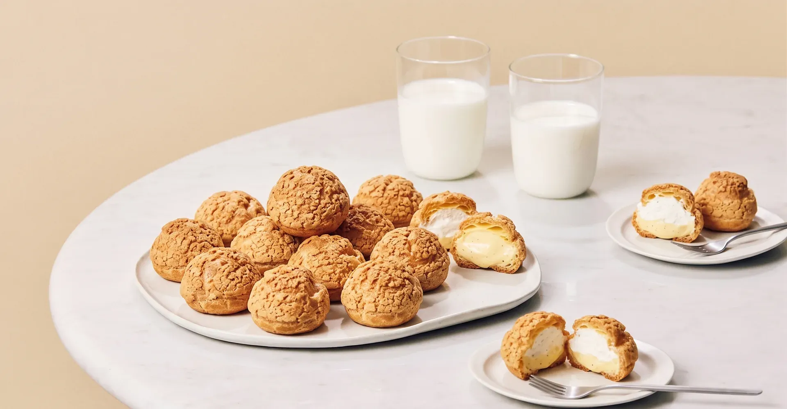

WHAT IS
NEW YORK SAKURAYA?
NEW YORK SAKURAYA(ニューヨーク桜屋)は
2001年10月にニューヨーク・フラッシングで創業しました。
そして2026年6月、福岡県春日市に日本第1号店をオープンしました。
ニューヨークで25年磨いた菓子づくりは、
和のこころで作るワールドスイーツ。
看板商品のシュークリーム・ミニパイ・
カムジャパン・プリンをご用意しました。
ドリンクには和テーストの
「わらび餅入り抹茶オレ・ほうじ茶オレ」、
糸島レモンで作った自慢のレモネードなどを
ご用意しています。
福岡で和菓子を作り続けて60年。
ある日届いた一通のメールが始まりでした。
ニューヨークとの出会いと縁が紡いだ「桜屋」は
天・地・心・・・時が熟し、人が集まり、心が通う場所。
その言葉を胸に、2001年に誕生しました。
和のこころを胸に込めて、ワールドスイーツという
テイクアウト専門でお届けします。
FAQ
カムジャパンとはどんなお菓子ですか？
韓国で人気のジャガイモを使った焼き菓子です。NEW YORK SAKURAYAの看板商品の一つで、ジャガイモのほっこりした甘さとサクッとした焼き目が特徴です。
営業時間と定休日を教えてください
10:00〜17:00 で営業しています。毎週水曜日と木曜日が定休日です。
テイクアウト専門ですか？店内で食べることはできますか？
NEW YORK SAKURAYAはテイクアウト専門店です。店内に飲食スペースはございません。
場所はどこにありますか？
現在の店舗は福岡県春日市伯玄町20-55-4(日本第1号店)です。西鉄春日原駅・JR春日駅から徒歩圏内、自衛隊福岡病院のすぐそばにあります。
ニューヨーク桜屋はいつどこで創業したお店ですか？
2001年にニューヨークで創業した洋菓子店です。25年間ニューヨークで営業した後、2026年に初めて日本へ進出し、福岡県春日市が日本第1号店となりました。
日本に他の店舗はありますか？
現在、日本国内では福岡県春日市の店舗のみです(2026年オープン・日本第1号店)。今後の新店情報は Instagram @newyorksakuraya でご案内します。
予約は必要ですか？
通常のテイクアウトはご予約不要です。大量のご注文や記念日用のご手配は、事前にお電話(090-5923-9678)でご相談ください。
支払い方法は何が使えますか？
詳細はお電話または店頭でお気軽にお問い合わせください。
どんな商品がありますか？
看板のカムジャパン・ミニパイ・チョコレートミニパイ・シュークリームをはじめ、プリンなどの焼き菓子・洋菓子と、わらび餅抹茶オレ・わらび餅ほうじ茶オレ(牛乳または豆乳)・レモネード・レモンスカッシュ・オレンジジュース・アイスコーヒー・ホットコーヒーなどのドリンクをご用意しています。
最新のメニューや新作情報はどこで確認できますか？
Instagram @newyorksakuraya で日々の新作・季節限定情報を発信しています。
@newyorksakuraya
ACCESS
| ADDRESS | 〒816-0825 福岡県春日市伯玄町20-55-4 |
| TEL | 090-5923-9678 |
| hakugen2551@gmail.com | |
| HOURS | 10:00 - 17:00 |
| CLOSED | 毎週 水曜日・木曜日 |